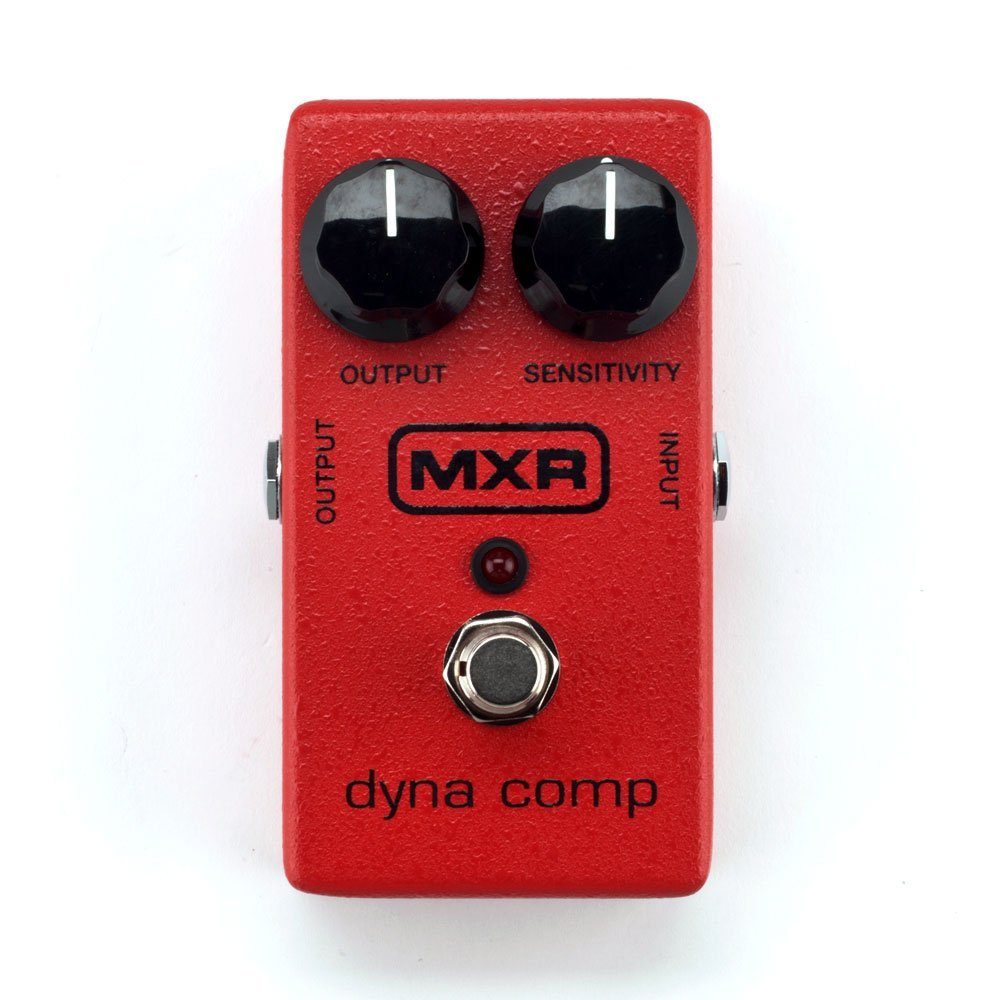

|  |
MXR Dyna Comp The Dyna Comp Compressor is one of the most popular compressors of all time. Whether you want to tighten up your signal, add rich sustain, or create the percussive and clicky sound heard on numerous hit records, this pedal is straightforward and easy to use. For these reasons, the Dyna Comp Compressor has been the secret weapon on countless pedalboards for years. |

|